Backend
Desarrollo de lógica de negocio y servicios.
Desarrollo soluciones de software con Python, C++, APIs REST y bases de datos. Me interesa construir aplicaciones funcionales, mantenibles y preparadas para desplegarse en entornos reales.
 LG
LG
Desarrollador de software
Mi perfil, mi experiencia y la manera en que abordo el desarrollo de software.
Soy ingeniero electrónico con experiencia en desarrollo de software, mantenimiento de aplicaciones, programación y solución de problemas técnicos.
He trabajado con Python, C++, bases de datos SQL y desarrollo web. Actualmente enfoco mi crecimiento profesional en el desarrollo backend, la construcción de APIs y el diseño de aplicaciones que puedan mantenerse y evolucionar con el tiempo.
También me interesa la automatización y el despliegue de aplicaciones mediante herramientas como Docker, Linux y Terraform.
Análisis, depuración y mejora de soluciones de software.
Conexión entre backend, bases de datos e interfaces web.
Herramientas y tecnologías con las que he trabajado y continúo desarrollándome.
Desarrollo de lógica de negocio y servicios.
Persistencia, consultas y gestión de información.
Entornos de desarrollo y despliegue.
Control de versiones y tecnologías web.
Proyectos que demuestran mi experiencia práctica en desarrollo backend, APIs, bases de datos y contenedores.
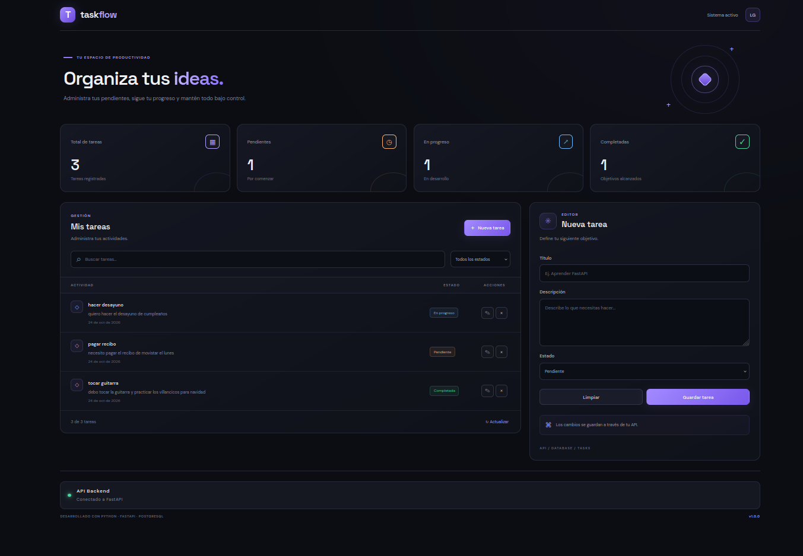
TASKFLOW · GESTIÓN DE TAREASAplicación web para gestionar tareas personales mediante una API REST con FastAPI, PostgreSQL y un frontend en HTML, CSS y JavaScript. Implementa operaciones CRUD y utiliza Docker Compose para ejecutar los servicios en contenedores.
Ver proyecto en GitHub ↗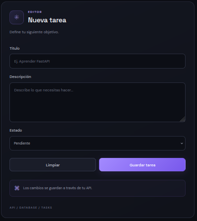
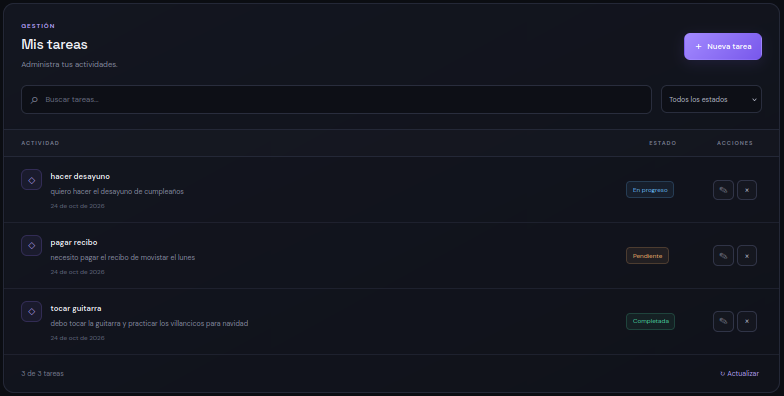
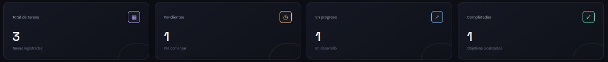
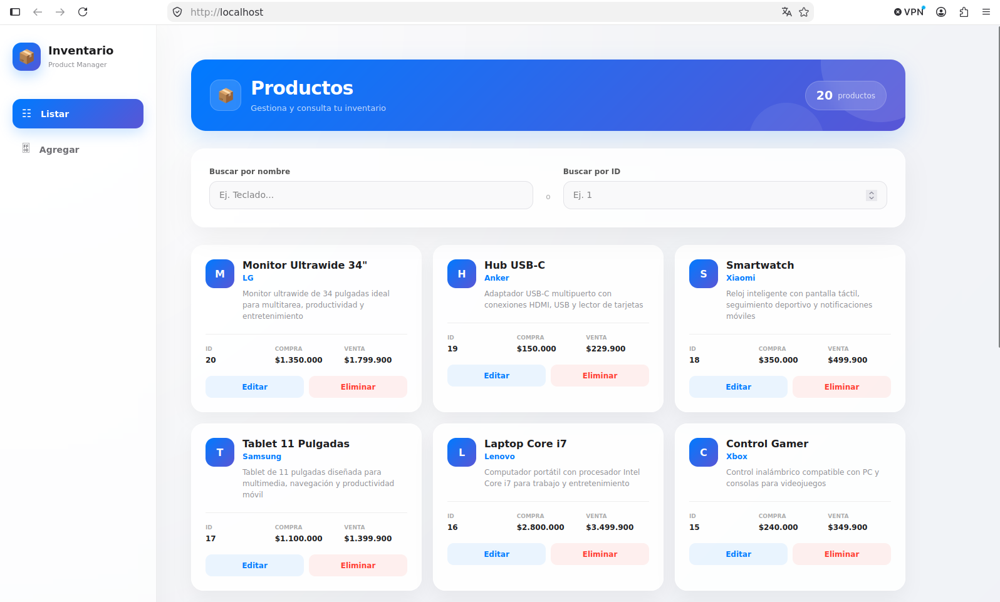
SISTEMA DE INVENTARIOAplicación web para la gestión de inventario, con backend desarrollado en Python y FastAPI, base de datos PostgreSQL e interfaz web. Docker Compose permite configurar y ejecutar los servicios del proyecto de forma conjunta.
Ver proyecto en GitHub ↗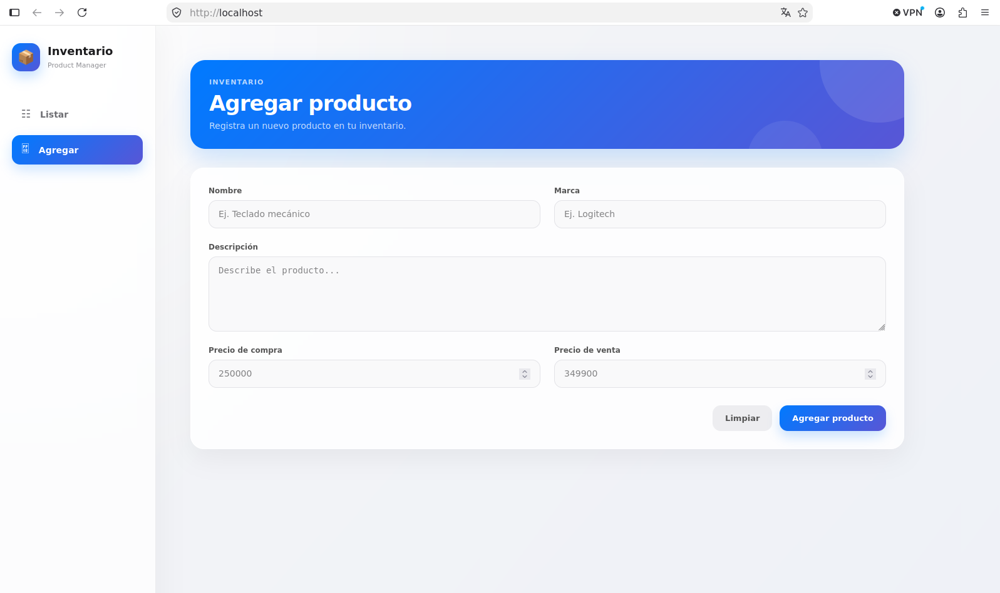
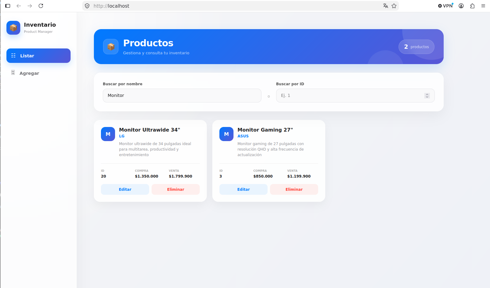
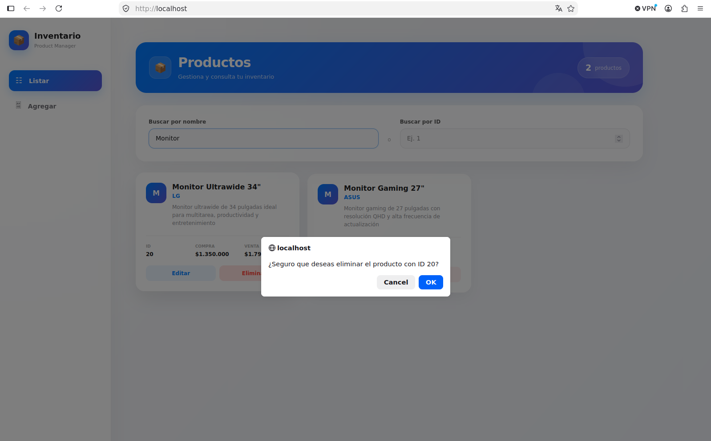
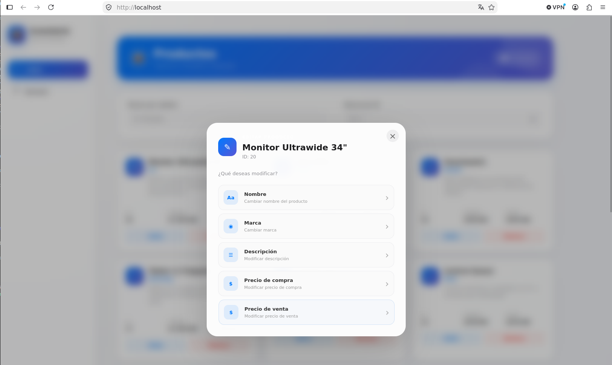
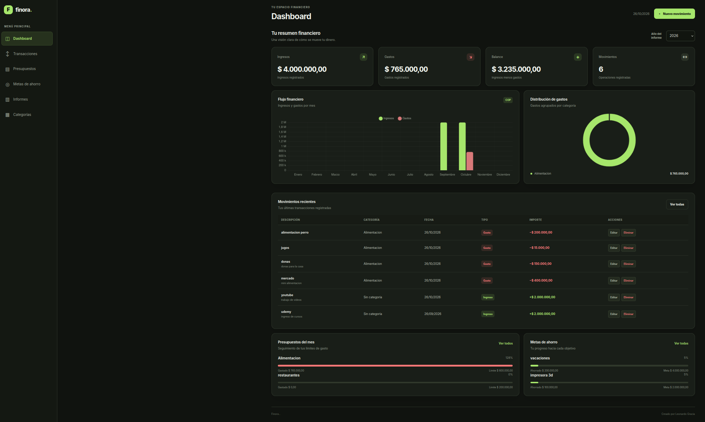
FINORA · FINANZAS PERSONALESAplicación web para organizar y controlar las finanzas personales. Permite gestionar ingresos y gastos, administrar presupuestos, crear metas de ahorro y consultar informes financieros. Cuenta con una API REST desarrollada con FastAPI, persistencia de datos en PostgreSQL y una arquitectura basada en servicios, repositorios y modelos. Docker Compose facilita la ejecución conjunta del backend, la base de datos y el frontend.
Ver proyecto en GitHub ↗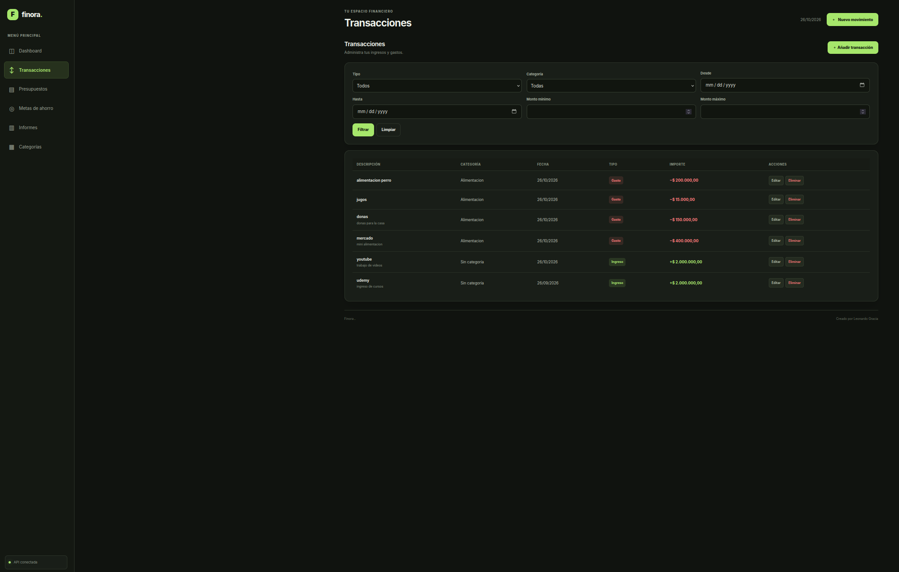
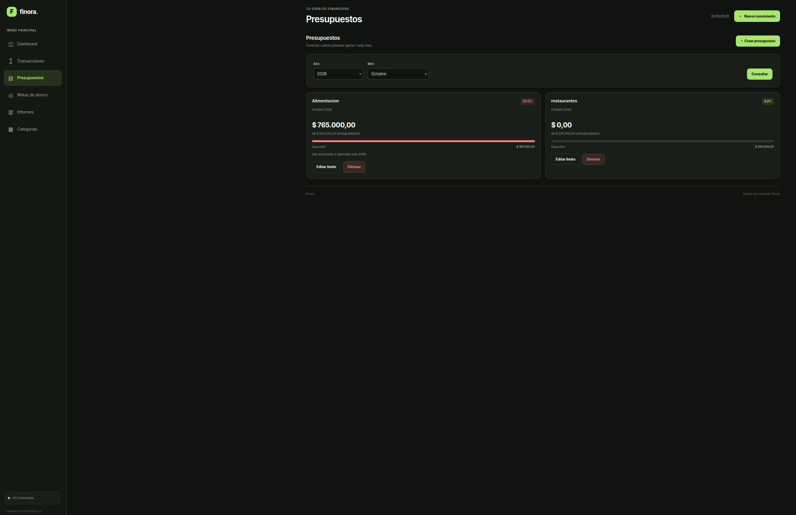
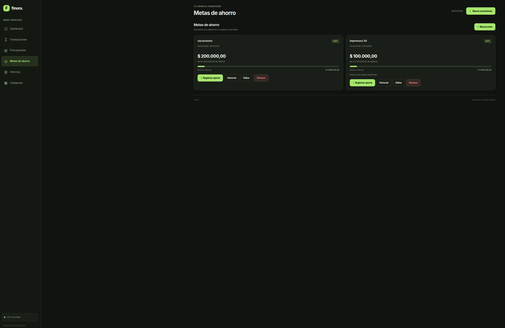
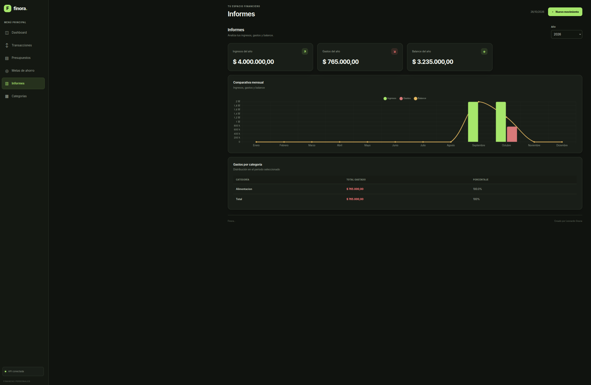
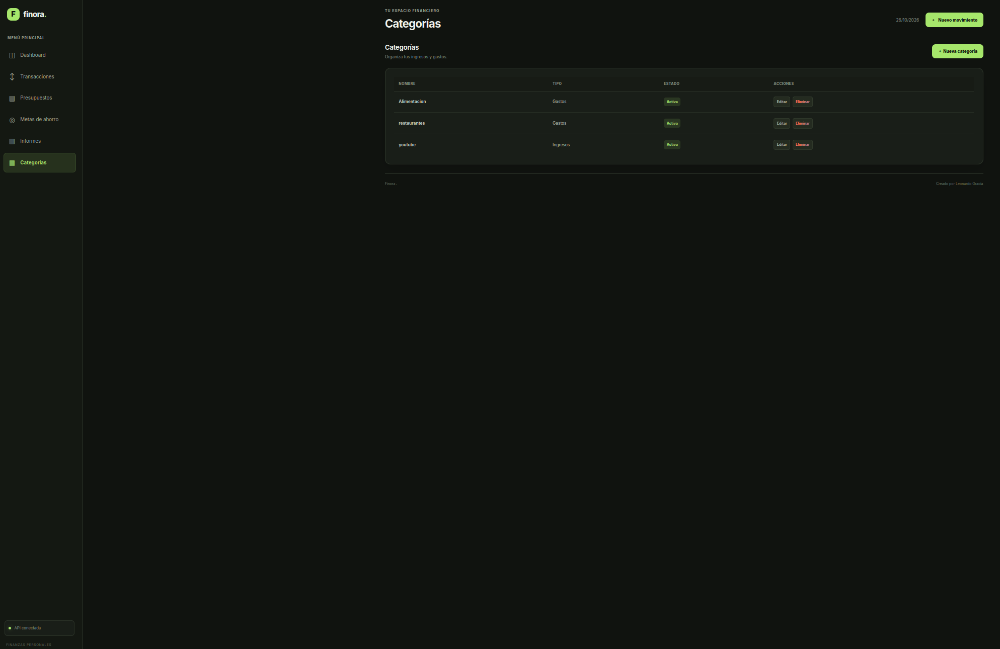
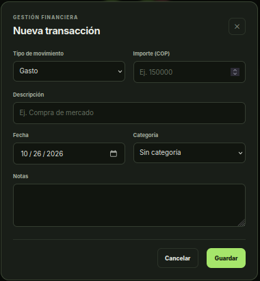
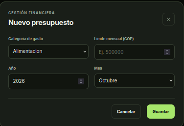
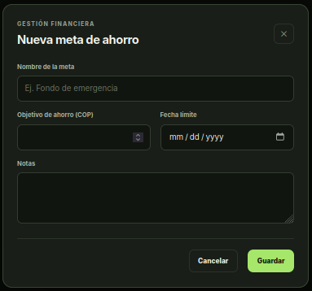
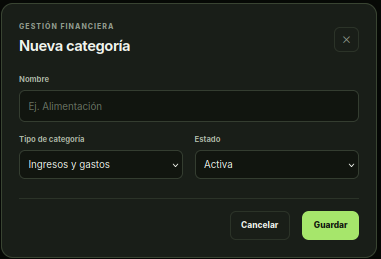
Experiencia en desarrollo, mantenimiento de aplicaciones e integración de software.
Desarrollo y mantenimiento de proyectos de software, depuración de errores e implementación de funcionalidades utilizando diferentes lenguajes y tecnologías.
Mantenimiento del sitio web corporativo, implementación de funcionalidades y soporte técnico relacionado con las soluciones web de la empresa.
Desarrollo, mantenimiento y mejora del sitio web institucional, con atención a sus funcionalidades y necesidades técnicas.
Programación en C/C++ para microcontroladores, pruebas técnicas e integración de componentes de hardware y software.
Mi formación en ingeniería y aprendizaje complementario en desarrollo e infraestructura.
Universidad Manuela Beltrán
2021Contenedores y entornos de desarrollo.
Orquestación y administración de contenedores.
Administración de sistemas y automatización.
Automatización de procesos de integración.
Infraestructura como código.
¿Tienes un proyecto o una oportunidad laboral? Puedes contactarme por cualquiera de estos medios.
Usa +/− para ampliar · ←/→ para cambiar de imagen · Esc para cerrar